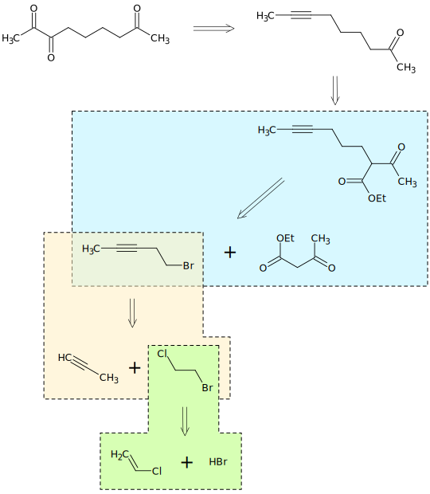
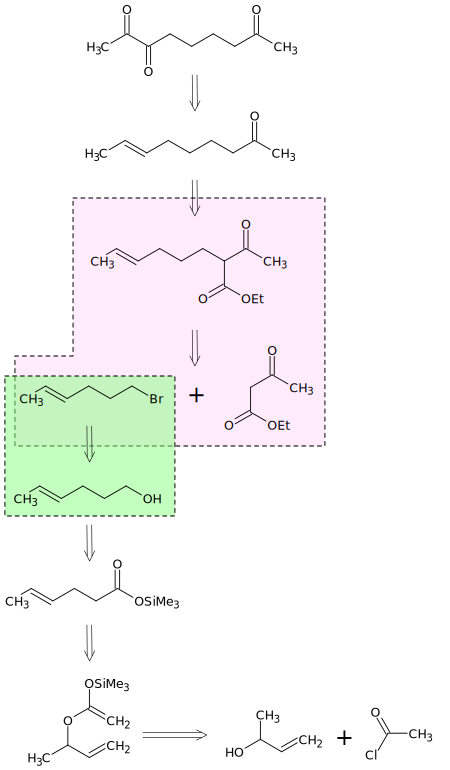
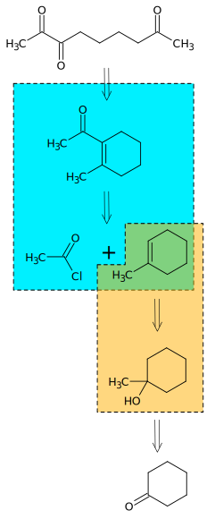
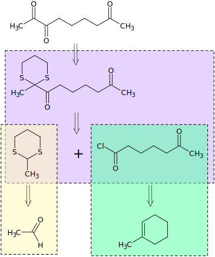
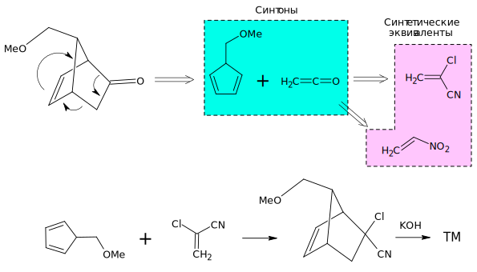
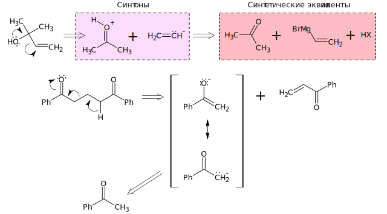

Планирование синтезов
Планирование синтезов Оглавление
Оглавление О проекте
О проектеЛекция 1. Введение в планирование синтезов
Предметом лекций является планирование многоэтапных синтезов с использованием стратегии трансформов.
Основные идеи почерпнуты из книги E.J. Corey, Xue-Min Cheng "The logic of chemical synthesis" [ISBN: 978-0-471-11594-6], а иллюстрирующие их примеры из книг:
- S. Warren "Designing organic synthesis. The disconnection approach" [ISBN: 978-8126511464];
- S. Warren "Organic synthesis. The disconnection’s approach" [ISBN: 978-0-470-71236-8];
- S. Warren "Workbook for Organic Synthesis: The Disconnection Approach" [ISBN: 978-0470712269];
- J. Furhop, G. Penzlin "Organic Synthesis; Concepts, Methods, Starting Materials." [ISBN: 1-56081-823-9];
- Tse-Lok Ho "Tandem organic reaction" [ISBN: 0-471-57022-2];
- K.C. Nicolaou, E.J. Sorensen "Classics in Total Synthesis: Targets, Strategies, Methods" [ISBN: 978-3-527-29231-8];
- и др.
Пять недостатков лекционного метода обучения:
- Монолог;
- Различный уровень подготовки слушателей;
- Невозможность слушателя долго быть сосредоточенным (потеря внимания);
- Два дела сразу;
- Ошибки лектора.
Изложение будет проводиться в рамках классической электронной теории, метод молекулярных орбиталей предполагается использовать только там, где без него невозможно обойтись. Выбрана следующая система обозначения углеродной цепи - зигзагообразные формулы (молекула изображена в заторможенной конформации), например, син- и анти-2,3-дигидроксипентан:
Для указания перемещения пары электронов или частицы с парой электронов используется следующая стрелка
А для указания перемещения одного электрона или частицы с неспаренным электроном используется следующая стрелка
Для описания перемещения электронов в молекуле используется метод резонанса Полинга.
Ретросинтетический анализ
Целевые молекулы TM или цели TGT.
Ретросинтетический анализ это процедура планирования многостадийного синтеза, в процессе проведения которой химик мысленно переходит от целевой молекулы через ряд как правило более простых структур к доступным исходным соединениям.
Этот мысленный переход осуществляется путем последовательного ответа на два вопроса:
- Из каких исходных соединений и при помощи какой реакции можно в одну стадию получить целевую молекулу?
- Доступны ли эти соединения?
Пример (1983 г, Snider):
Анализ 1

Анализ 2

Анализ 3

Анализ 4

Трансформ это мысленно проводимая реакция обратная прямой реакции синтеза. Трансформам присваивают имена прямых реакций. Для того чтобы отличить трансформ от прямой реакции используют двойную стрелку:
Арифметический демон и борьба с ним
Допустим, у нас имеется линейная схема синтеза целевой молекулы в 10 стадий:
A1 → A2 → A3 → … → A10 → TM
Допустим, выход реакции на каждой отдельной стадии составляет 60 или 90%. Тогда общий выход всего синтеза будет равен:
0.610 x 100 = 0.6%
0.910 x 100 = 34.8%
Схемы синтеза называют конвергентными, если в них синтезируются два сложных предшественника целевой молекулы:
A1 → A2 → A3 → … → A6
5 стадий
B1 → B2 … → B5
4 стадии
A6 + B5 → TM
1 стадия, итого также 10 стадий, однако общий выход составит уже:
0.66 x 100 = 4.6%
0.96 x 100 = 53.1%
Вывод - конвергентные схемы синтеза при прочих равных условиях предпочтительнее.
Классификация трансформов, синтоны и их синтетические эквиваленты. Ретроны
Синтоны это продукты трансформов - молекулы, катионы, анионы, радикалы, карбены и пр.
Синтетические эквиваленты это реагенты, выполняющие роль синтонов в реакциях.
Ретрогны это необходимые и достаточные элементы в строении молекулы, позволяющие проводить определенный трансформ. Ретронам присваивают название трансформов.
1. Расчленение (Disconnection, D)
1.1. Расчленение цикла (Ring disconnection, RGD)

1.2. Расчленение углеродной цепи (Chain disconnection, CHD)

1.3. Отщепление функциональной группы (Functional group disconnection, FGD)
2. Сочленение (Reconnection, R)
2.1. Образование циклов (Ring reconnection, RGR)
2.2. Введение функциональной группы (Functional group addition, FGA)
3. Замена одной функциональной группы на другую (Functional group interchange, FGI)
4. Перемещение функциональной группы (Functional group transition, GFT)
5. Перегруппировка (Rearangement, Rt)